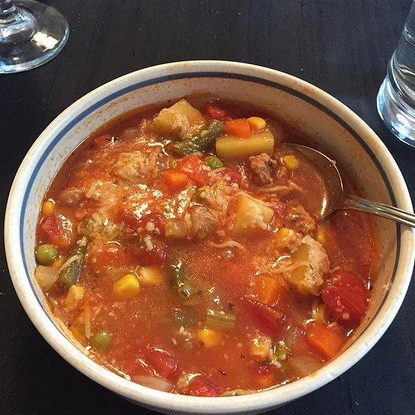

Ground Beef Vegetable Soup

Description
This is a satisfying, very easy, and delicious vegetable soup to serve anytime of the year. Serve with saltine crackers and chunks of sharp cheese.Original recipe yields 6 servings
Ingredients
- 2 pounds ground beef
- 4 carrots, diced
- 4 celery ribs, chopped
- 1 onion, chopped
- 4 potatoes, peeled and cut into 1-inch pieces
- 1 (15 ounce) can tomato sauce
- 1 (14.5 ounce) can whole tomatoes, crushed
- 1 (15 ounce) can peas, undrained
- 1 (15.25 ounce) can whole kernel corn, drained and rinsed
- 1 (15 ounce) can green beans, drained and rinsed
- ground black pepper to taste
- ⅛ teaspoon ground thyme
- 1 bay leaf, or more to taste
- ¼ cup water, as needed
Steps
- Crumble ground beef into a stockpot over medium-high heat; cook and stir until beef is crumbly, evenly browned, and no longer pink, 7 to 10 minutes. Drain and discard any excess grease.
- Stir carrots, celery, and onion into the ground beef; cook and stir until vegetables are soft, about 5 minutes. Add potatoes, tomato sauce, crushed whole tomatoes, undrained peas, corn, and green beans to the pot; season with black pepper. Stir mixture until evenly mixed. Add thyme and bay leaf to the pot. Pour 1/4 cup water over the mixture if needed to moisten mixture, replenishing as needed while cooking.
- Bring soup to a simmer, place a cover on the pot, and cook, stirring regularly, until potatoes are tender, about 1 hour.